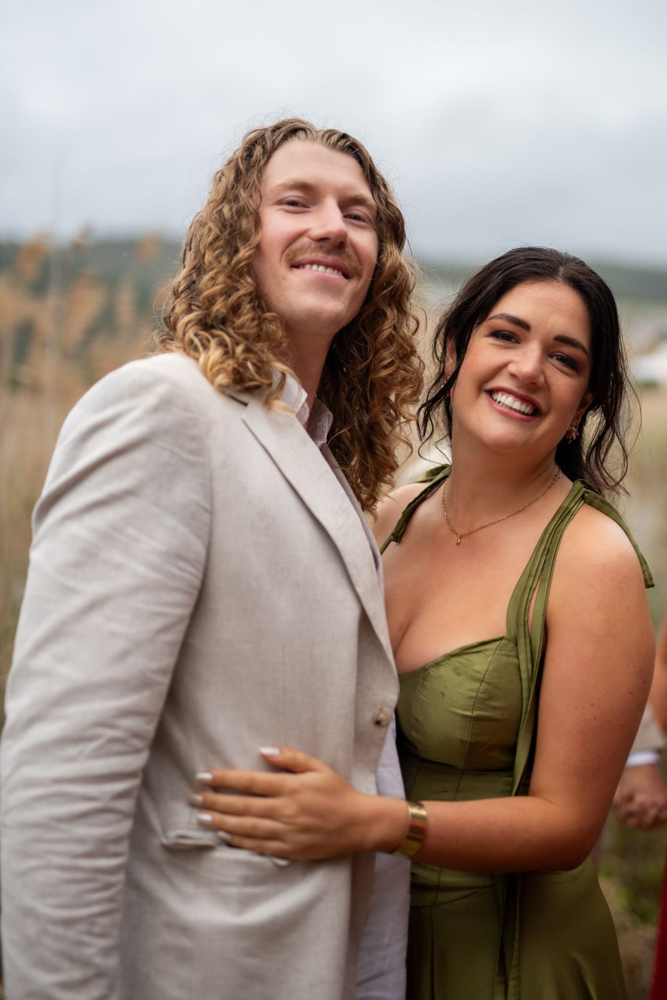
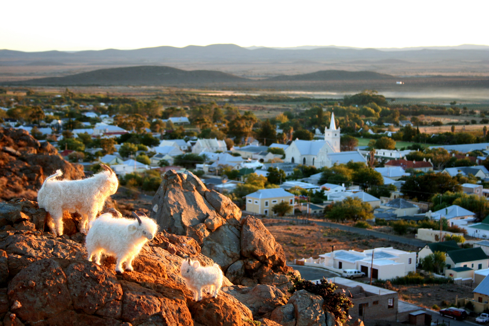
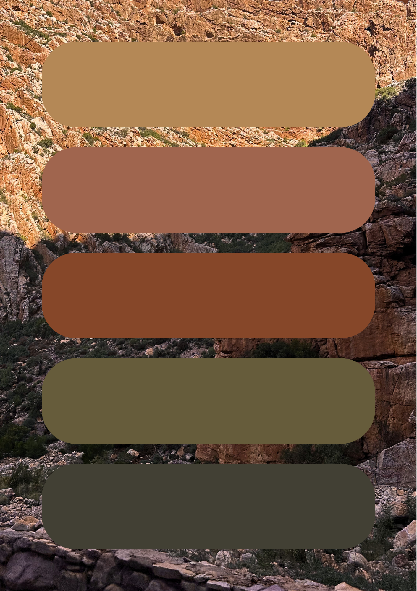

The Weekend
Wedding Details
2–4 April 2027 · Prince Albert, Karoo

The Schedule
17h00 to 19h00ish
Welcome Drinks
Welcome drinks and snacks at the Swartberg Hotel Gin Bar. Drinks and light bites will be provided, and there will be a speech or two. We encourage anyone who would like a larger meal to explore the lovely restaurants in town, the Hotel restaurant also has great options.
14h00 to late
The Big Day
Our timeline is still being fine-tuned, but the shape of the day will look a little something like this:
We’ll begin with a late afternoon ceremony in the pass, surrounded by mountains and celebratory drinks afterwards.
From there, we’ll move through to Die Skou Gronde for the reception in the barn and then we will take to the dance floor until late.
More detailed timings will follow closer to the weekend, but for now: arrive ready for a celebratory evening with lots of laughter, good music, and even better company.
As you are
Thank you for being part of this wonderful weekend. We might see you around town, but otherwise please travel to your next destination safely.
Venue
Prince Albert, Western Cape
Our ceremony and canapés will take place in the majestic Swartberg Pass. Surrounded by breathtaking mountains, we’ll share a few glasses of bubbly and maybe a tear or two as we kick off the day. Shuttle services will be organised to get you exactly where you need to be.
The reception will be held at Die Skou Gronde, in a spacious barn filled with music, delicious food, plenty of drinks, and heaters to keep us cosy as we celebrate the night away.

Where to Stay
We recommend booking early — accommodation in Prince Albert fills up quickly.
Prince Albert is filled with charming places to stay. While there are many lovely options in town (including smaller guesthouses, Airbnbs, and private cottages), we’ve reserved a few favourites to make things as easy as possible.
Our top recommendation is the Swartberg Hotel (part of the Corktree Collection). It’s a beautifully restored heritage hotel in the heart of town, with classic Karoo charm, a great restaurant, and everything is within walking distance. It is in the centre of town and we will have our shuttle collection happening here for the wedding events.
Stunning hotel in the centre of town.
Right where the Friday evening meet and greet drinks will be held. Main shuttle collection point.
Swartberg Hotel
Several well-reviewed options within walking distance of the centre of town. We've made temporary reservations at a few spots below, so get in early.
Booking is simple: just contact your preferred spot and mention that you’re booking for Alice & Olly’s wedding.
They’ll release one of the reserved rooms for you.
If you’d prefer something more else, there are plenty of other options around town from quaint cottages to boutique guesthouses. Please have a look on AirBnB or Booking.com for options. Thankfully, wherever you choose, everything in Prince Albert is close by.
Good to Know
Dress code
“Whatever you feel most fabulous in”
Formal
We’d love it if you could lean into earthy tones and natural textures that will feel right at home in the Karoo setting. Think dressed up and true to you. Footwear-wise, this is very much a farm wedding. Vellies, Birkenstocks, or any shoes you can comfortably walk and dance in on natural terrain will serve you well. If you’re set on heels, just keep in mind that the ground may be uneven.
As the sun sets, temperatures tend to drop quite quickly, so please bring a jacket or something warm for the evening. Mostly, we just want you to feel good and be ready to boogie.
Colour Palette

We’ve attached a colour scheme to inspire guests’ outfits that celebrates the Karoo setting. This is merely a suggestion, so please don’t feel restricted to these colours.
Weather
April in Prince Albert is something of a sweet spot — warm, golden days and crisp, cosy evenings.
During the day, you can expect temperatures in the region of mid-20s (°C), with plenty of sunshine and clear Karoo skies. As the sun sets, the temperature drops quite quickly, often into the low teens or even single digits, bringing that distinct Karoo evening chill. Please be sure to have something warm on hand.
Rain is generally minimal this time of year, and the air tends to be dry and still.
In short: pack light and breathable by day, layered and cosy by night.
Children
Children of all ages are warmly welcome at the ceremony and canapés—the bride especially encourages it! We do kindly ask, however, that once we move to reception from canapes, any children under the age of 10 are tucked in for the night.
Parking
There is no parking available at the ceremony venue. We will organise shuttle services with pick-up points in town to bring you to the ceremony.
When we move to the reception venue, parking will be available; however, we recommend using the shuttle service to get home at night,
or enjoying a starlit stroll through the charming little town.
The reception venue is 100 meters from the main road and about 500 meters from the center of town.
There is plenty of parking at the reception venue. If you would like to have your car at the reception venue at the end of the night, please organise this in advance.
Getting There
Prince Albert is tucked away in the Karoo, and rewards travelers with wide-open landscapes and a slower, quieter pace of life. As our loved ones are scattered all over, our vision is to bring everyone together in one wonderful place.
Flying
The nearest airport is George Airport. From there, it’s around a two-hour drive to Prince Albert. The route is scenic and straightforward, with beautiful mountain views along the way. Car hire from the airport is recommended.
Driving from Cape Town
If you’re traveling from Cape Town, the journey is approximately 4.5 hours by car. It’s a stunning drive, think long stretches of open road, dramatic mountain passes, and that unmistakable Karoo landscape. Take your time, stop for coffee or at a padstal along the way, and enjoy the journey.
Driving from elsewhere
For those travelling from other parts of the country, Prince Albert is accessible by road from several directions. One important note: if your route includes Meiringspoort Pass, please check conditions ahead of time. While it’s one of the most beautiful drives in the country, it is prone to flooding and sections can occasionally be washed away after heavy rains.
Not yet RSVP'd?
Please let us know by 1 August 2026 — we'd love to have you with us.
RSVP now